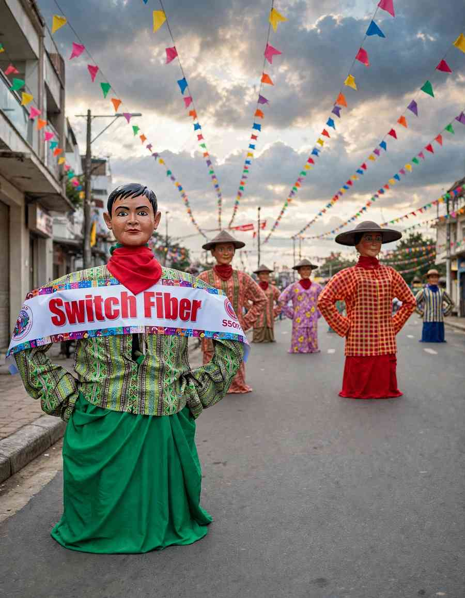

Every November, Angono fills its streets with papier-mâché giants, and the 2026 Higantes Festival runs for the whole month. The Grand Parade is on Sunday, 15 November, starting at 7 a.m. at SM Center Angono, and the town fiesta weekend follows on 22 and 23 November, with the fluvial parade for St. Clement on Laguna de Bay on the 23rd.
The festival opened on 31 October at the Angono Gymnasium, where the official calendar of activities was unveiled. This year's theme is Higante at Sining: Ugat ng Kalinangan, Sagisag ng Pagkakaisa, which ties the giants to the town's reputation for art. Check the municipality's official Facebook page the week you go, since start times and routes can change.
Satire started it. Locals trace the custom to the late 1800s, when Spanish-era landowners kept ordinary townspeople from holding celebrations of their own, with one festival a year as the exception. Villagers used that single occasion to parade oversized puppets modelled on the hacienda owners, a way of laughing at the people who ruled their lives. The giants outlived the landlords and became the town's signature.

What You Will See on the Street
Stand close to one and the scale hits you. A typical figure rises around three metres, with a papier-mâché head shaped from layers of paper strips, the slowest part of the job, and a bamboo or rattan frame underneath that lets a bearer walk inside it for hours. Making one takes about a month. The faces are stern, the hands rest on the hips, and the costumes are patterned and bright. More than a hundred take part now, many of them built by families and individual barangays.
Look out for the parehadores too, costumed dancers in wooden clogs who clatter through the streets with wooden paddles, calling out "¡Viva, San Clemente!" Clement is the patron of fisherfolk and, according to tradition, was martyred by drowning, which is why water runs through the celebration. Parade-goers get doused as a blessing, a custom called basaan. Expect to get wet.
The 2026 Schedule of Activities
Sat 31 Oct · LaunchFestival launch and preview parade
- 31 OctOpening at the Angono GymnasiumThe official calendar of activities was unveiled here
Sun 15 Nov · Grand ParadeParade of Giants and a full day of contests
- 6:00 AMHiganteng Zumba
- 7:00 AMGrand ParadeStarts at SM Center Angono
- 9:00 AMHiganteng Yell
- 9:30 AMHigantes Stop Dance and Street Dance Exhibition
- 1:00 PMBalaw Balaw and Itik cooking contests
- 2:00 PMMarching Band Competition
- 4:00 PMHigantitos Fashionista ContestThe miniature giants get their own runway
- 5:00 PMEating contests
- 6:00 PMAwarding of winners
- 7:00 PMFireworks
- 7:30 PMHigantes Tugtugan Night
The Bangko Sentral ng Pilipinas commemorative coin is also being promoted at Plaza Rizal on 15 November. Weather can move things: in 2024 the grand parade was called off ahead of a typhoon and held a week later.
Sun 22 Nov · Fiesta eveBisperas Mayores
- TBABisperas MayoresThe eve of the town fiesta; check the town's page for times
Mon 23 Nov · Feast of St. ClementFiesta day, fluvial parade and Basaan
- TBATown fiestaIn 2025 the day began with Mass at the Diocesan Shrine and Parish of St. Clement
- TBAFluvial parade on Laguna de BayThe traditional parade in honour of St. Clement
- TBABasaanWater dousing as a blessing; expect to get wet
Times for the 22 and 23 November programme are in the town's official calendar.
For one day only, make it Sunday, 15 November: the parade, the contests and the fireworks are all on that date. The 23rd falls on a Monday this year, so the fluvial parade suits anyone with a flexible weekday.
Getting to Angono
Angono sits on the shore of Laguna de Bay, about 29 kilometres east of Manila and roughly 12 from Antipolo. There is no rail line. By road, take Ortigas Avenue Extension or Marcos Highway. Without a car, buses from Cubao or EDSA-Shaw heading to Binangonan or Angono drop you near the town centre. Count on one to one and a half hours from Metro Manila in ordinary traffic, and longer on parade days.
Parking near the route is limited, so public transport or a ride-hailing app is the easier choice. Rooms in town fill quickly during the festival, which is why many visitors treat it as a day trip from Metro Manila or stay in nearby Antipolo. For a canal-side meal or an easy stroll before or after, our Venice Grand Canal guide covers a Metro Manila option.
Practical Tips for Parade Day
- Arrive early. The giants move along M.L. Quezon Avenue, and streets fill as the parade approaches.
- Dress to get wet. Wear quick-drying clothes and shoes you do not mind soaking, and put your phone in a dry bag.
- Bring sun protection and water. The route is outdoors with little shade, though food vendors line it.
- Watch the weather. November is still within typhoon season, so check PAGASA's forecast before you leave.
- Carry small cash. Street food stalls and tricycles rarely take cards.
If it is your first Philippine street festival, the crowd habits in our Sinulog first-timer's guide apply here too, from meeting points to keeping valuables close.
Turn It Into an Art Day
Angono calls itself the Art Capital of the Philippines, and the label has roots: it is the hometown of National Artists Carlos "Botong" Francisco and Lucio San Pedro. On the boundary with Binangonan, the Angono-Binangonan Petroglyphs hold 127 human and animal figures carved into a rock shelter, probably before 2000 BC, and have been a National Cultural Treasure since 1973. The National Museum's Angono branch manages the site, so confirm opening days before you go.
For lunch, Balaw-Balaw serves native Filipino dishes among folk art, and it is wise to reserve during festival season. Lakeside restaurants along Laguna de Bay offer seafood with a view.
Is It Worth the Trip?
It is crowded, hot and wet, and parking is hard to find. It is also built by the town itself, on streets where the giants were made by neighbours and not for tourists. Go for the craftsmanship and the satire behind it, pick the 15th for the parade or the 23rd for the water, and keep the schedule loose. If you enjoy festival season in other cities, our MassKara 2026 guide shows how a very different celebration plays out.


Comments
No comments yet. Been here recently? Share a tip or ask a question.
Leave a Reply